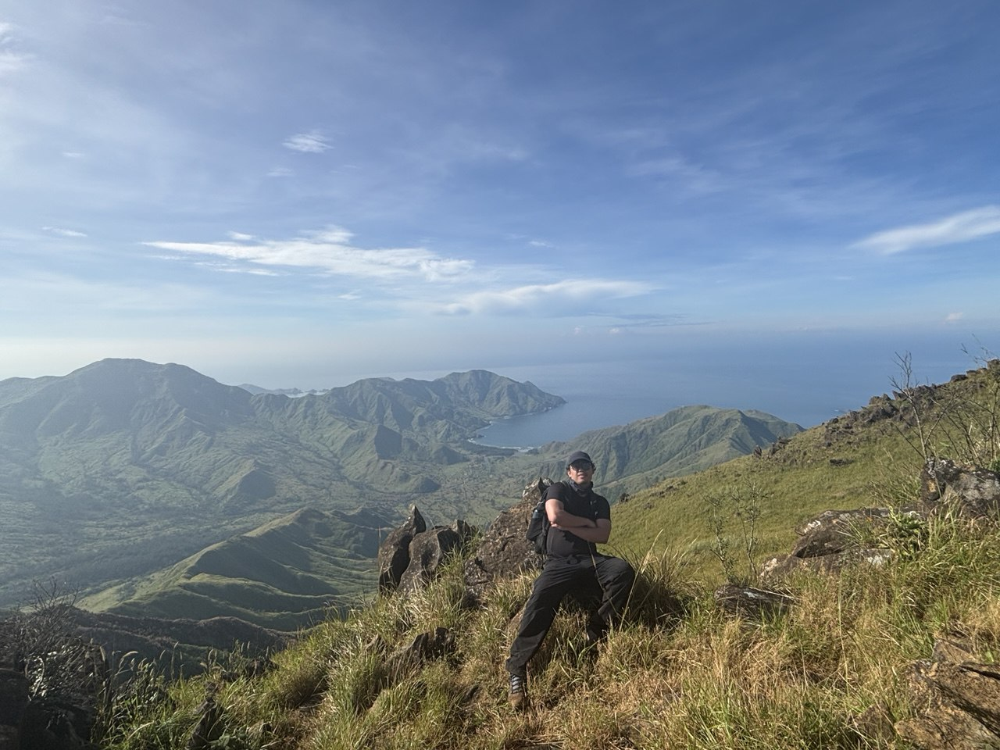

Writing
Tech, hiking, and everything in between.
-
Building AgentFlow with Tauri v2
How I built a visual pipeline builder for Claude Code agents using Tauri v2, React Flow, and Rust...
AgentFlow is a desktop app for visually building, managing, and running Claude Code agent pipelines. I built it with Tauri v2, and here's what I learned shipping a real Rust + React desktop app.
What it does
The core idea is simple: a drag-and-drop canvas where you wire together AI tasks, shell commands, git operations, and approval gates into executable pipelines. Think of it as a visual orchestration layer for Claude Code.
- 6 node types: AI Task, Shell, Git, Parallel, Approval Gate, Sub-pipeline
- One-click execution with real-time status animations and streaming logs
- Cost tracking with per-node token estimates in USD, budget limits, and a cost dashboard
- Resume from failure so you can pick up where a pipeline broke without re-running everything
The stack
Tauri v2 made this feasible as a solo project. The frontend is React 19 + TypeScript with React Flow for the canvas editor and Zustand for state. The backend is Rust with Tokio for async pipeline execution and SQLite for persistence.
The IPC layer is the best part. The frontend invokes Rust functions directly, type-safe and fast. No HTTP server, no serialization overhead. Pipelines are stored as JSON in
.claude/pipelines/and auto-generate.claude/agents/*.mdfiles, so everything stays compatible with the Claude Code CLI.Lessons learned
Tauri's tiny footprint is real. The final binary is ~8 MB versus Electron's 200 MB+. But the tradeoff is maturity: you'll write more Rust plumbing yourself. For a project like this where the backend is the product, that's actually a feature.
Interested? Check out the AgentFlow site for docs and downloads.
-
Testgap: AI-powered test gap finder
A Rust CLI that scans your codebase for untested functions and uses Claude to suggest what tests to write...
Testgap is a CLI tool I built in Rust that scans your codebase for untested functions and uses Claude AI to suggest what tests to write first. It's the tool I wished existed every time I joined a project with spotty coverage.
How it works
Under the hood, testgap uses tree-sitter to parse function definitions across your codebase, then maps them against existing test files to find gaps. Each untested function gets a severity classification:
- Critical: public functions with high complexity
- Warning: public functions with low complexity
- Info: private/internal functions
AI-powered suggestions
The real value comes when you enable the AI layer. Testgap sends untested functions to Claude and gets back risk assessments and concrete test suggestions, so you know not just what to test but how. You can also run
--no-aifor free static analysis only.Built for CI
Testgap outputs in human-readable, JSON, and Markdown formats. Use
--fail-on-criticalas a CI gate to catch untested public APIs before they ship. It supports Rust, TypeScript, Python, and Go out of the box.Check out the Testgap site for docs and installation.
-
Pipeline orchestration patterns
Lessons from building AgentFlow's execution engine. The patterns that worked, the ones that didn't, and why agent pipelines are different...
While building AgentFlow, I had to figure out how to orchestrate multi-step AI workflows reliably. These are the patterns that survived contact with real use.
Sequential chains
The simplest pattern: A → B → C. Each node runs after the previous one completes. This works well for deterministic workflows like running tests, then lint, then deploy. But with LLM nodes, the output of step A shapes what step B even means, so you need to think carefully about what context flows between nodes.
Parallel fan-out with join
Fan out to multiple nodes simultaneously, then collect results at a sync point. This is where real speed gains come from. In AgentFlow, a Parallel node spins up concurrent tasks via Tokio and waits for all branches to resolve before continuing. The tricky part is deciding what to do when one branch fails. Do you cancel the others, or let them finish?
Approval gates
Not every step should run automatically. Approval gates pause execution and wait for human review before continuing. I use these before destructive operations. A pipeline might generate a migration, but a human should confirm before it runs
DROP TABLE. The gate stores the pending state so you can close your laptop and approve later.Resume from failure
This is the pattern I'm most glad I built. When a node fails, the pipeline saves its state: which nodes completed, their outputs, where it broke. You fix the issue and resume from the failed node without re-running everything before it. With LLM calls that cost real money, re-running a 10-step pipeline because step 8 hit a rate limit is painful.
Cost-aware execution
Agent pipelines aren't free. Each AI Task node has a per-node token cost estimate, and the execution engine tracks spend in real time. You can set budget limits so if a pipeline is about to blow past its cap, it stops early instead of burning through your API credits. This turned out to be one of the most-used features.
What's different about agent pipelines
Traditional orchestration (Airflow, Step Functions) assumes deterministic tasks. Agent pipelines are different: outputs are non-deterministic, a single node might stream tokens for 30 seconds, and context window limits mean you can't just pass everything forward. Designing for this means smaller nodes with explicit context boundaries, and treating retries as new attempts rather than replays.
-
MEMORY.md doesn't scale. Here's what does
Claude Code loads MEMORY.md into every conversation, but truncates after 200 lines. One big file means lost context...
Claude Code loads
MEMORY.mdinto every conversation, but truncates after 200 lines. One big file = lost context.The fix is simple: break it into topic files. Keep
MEMORY.mdas a lean index that links out to detailed files.~/.claude/project-path/memory/ MEMORY.md → index (under 200 lines) plan-phases.md → 9-phase implementation plan architecture-decisions.md docker-infra.md deferred-items.mdClaude loads the index every time, then reads topic files only when relevant. No truncation, no wasted context.
Why this works
Same idea as
.claude/agents/. A small markdown file that gives Claude exactly what it needs. Structure > bulk. The index tells Claude what exists and where to find it. The topic files hold the real detail (architecture decisions, infrastructure notes, deferred work) without competing for those 200 lines.Get started
Just ask Claude: "Break my MEMORY.md into topic files. Keep the main file as an index under 200 lines, and move detailed sections into separate .md files in the same memory directory."
-
Montalban Adventure
Three mountains in a day. The Montalban Trilogy was muddy, steep, and sharp, but the view on top made all of it worth it...
We did the Montalban Trilogy: Mt. Binacayan, Mt. Pamitinan, and Mt. Hapunang Banoi, all three summits in a single day. It's in Rodriguez, Rizal, about an hour from Manila.
The climb
It was challenging. There's a lot of uphill bouldering over limestone, long steep ascents that don't let up, and the rocks are sharp. You feel it in your hands as much as your legs. It rained a bit too, which made the trail muddy and slippery on some sections.
But the view from the top was really worth it. You can see the whole valley stretching out, Wawa Dam below, and if you're lucky, a sea of clouds rolling through in the morning.
The junction
Between the summits there's a junction where we took a quick rest. Everyone just sat on the rocks, caught their breath, drank water, and looked at each other like "we're really doing all three." Then we kept going.
Would I do it again?
Absolutely. It's not a beginner trail, but if you've done a few hikes before, the Trilogy is doable in a day. Just bring gloves for the bouldering, wear pants you don't mind getting muddy, and start early.
-
Automating Jira to PR with a markdown file
Create your own custom Claude Code agent that takes a Jira ticket and delivers a ready-to-merge PR. It's just a markdown file...
Create your own custom agent that takes a Jira ticket and delivers a ready-to-merge PR, end to end. The entire thing is a markdown file in
.claude/agents/.Here's the gist of mine:
# Ticket-to-PR Agent Complete development pipeline: takes a Jira ticket and delivers a ready-to-merge PR. ## Full Pipeline Jira Ticket → Worktree → Implement → Test → Fix → Changelog → Commit → Sync Develop → Push → PR ## Phase 1: Setup - Parse input (Jira key, URL, or description) - Fetch ticket details via Atlassian MCP - Create worktree from latest develop ## Phase 2: Implement - Plan before coding - Follow project conventions - Write tests (Pest / Vitest) ## Phase 3: Ship - Run tests, fix failures - Update CHANGELOG.md - Commit, merge latest develop, push, open PRI just type
ticket-to-pr ML-305in Claude Code and it handles everything: fetching the Jira ticket, scaffolding, implementation, tests, and PR submission.Why this works
Claude Code agents are just markdown instructions. No framework, no SDK, no build step. You describe the workflow in plain English with enough specificity (branch naming conventions, test commands, commit message format) and the agent follows it. The file lives in your repo, so your whole team gets it on
git pull.Get started
To create your own, just ask Claude: "Create a custom agent in
.claude/agents/that [describe your workflow]." Use the structure above as a starting point. The key is being explicit about your project's conventions (directory structure, test framework, commit format) so the agent produces code that looks like yours. -
Mt. Pulag at sunrise
My first major hike. Catching the sea of clouds at Luzon's highest peak, and the strangers who became friends along the way...
This was my first major hike, and honestly, it ruined me for regular weekends.
Mt. Pulag is Luzon's highest peak at 2,922 meters. You hike through mossy forest in the dark, starting around 2 AM, freezing and half-awake. Then the sun breaks through a sea of clouds and suddenly none of that matters.
The people made it
The trail itself is beautiful, but it's the people I remember most. Strangers at the homestay the night before became friends by the time we hit the summit. We shared stories over instant coffee, cracked jokes on the trail when our legs were giving out, and passed around whatever food anyone had left. Someone had a thermos of hot chocolate that became the most valuable thing on the mountain.
There's something about shivering together at 3 AM on a dirt trail that fast-tracks a friendship.
The trail
We took the Ambangeg trail, the most accessible of the three routes. It's a well-maintained path, about 3-4 hours to summit. Not technical, but the cold and the altitude make it real enough.
What to bring
- Thermal base layer, since temps drop to 0-5°C at the summit
- Headlamp with fresh batteries
- Hot water in a thermos (you'll thank yourself later)
- Extra food to share. It's the best icebreaker
When the clouds parted and the sea of clouds stretched out below us at golden hour, everyone just stood there, quiet for the first time all night. That moment alone was worth every shivering minute.
-
Exploring the Six Mountains at Cawag Hexa
25+ kilometers across six mountains in Subic, Zambales. This trail is unforgiving, and I loved every minute of it...

The Cawag Hexa is six mountains in one day: Mt. Balingkilat, Mt. Bira-Bira, Mt. Naulaw, Mt. Dayungan, Mt. Cinco Picos, and Mt. Redondo. Over 25 kilometers of trail in Subic, Zambales. This trail is unforgiving.
The first attempt
My first time, I didn't finish. We made it past the second mountain, Mt. Bira-Bira, but by then I'd run out of water and it was damn hot at the top. We stopped at the Thinking Tree, this spot on the trail that literally makes you think about whether you want to keep going. We decided not to. Took what they call the "Cawag Exit" and showed ourselves the way out.
The revenge hike
The second time, I finished it. We started at 3:00 AM and I didn't reach the end until around 8:00 PM. Almost 17 hours on the trail.
The first mountain is a full assault. Long, steep, and it doesn't let up. You're already working hard before sunrise. But after that, each mountain gives you something different. Different terrain, different views, different kind of tired.
The fourth mountain
Mt. Dayungan was the one that got to me. Same level of difficulty as the first, maybe worse because your legs are already gone by that point. And the fake peaks. You'd think you've reached the top, then there's another one. And another one. Feels like it never ends. I lost count of how many times I thought "okay, this is it" and it wasn't.
The finish
At the end of the trail there's a river. I couldn't enjoy it because it was already dark by the time I got there. But honestly, just finishing was the reward. Each mountain is unique and gives you a completely different experience. I was so happy I came back and completed it the second time around.